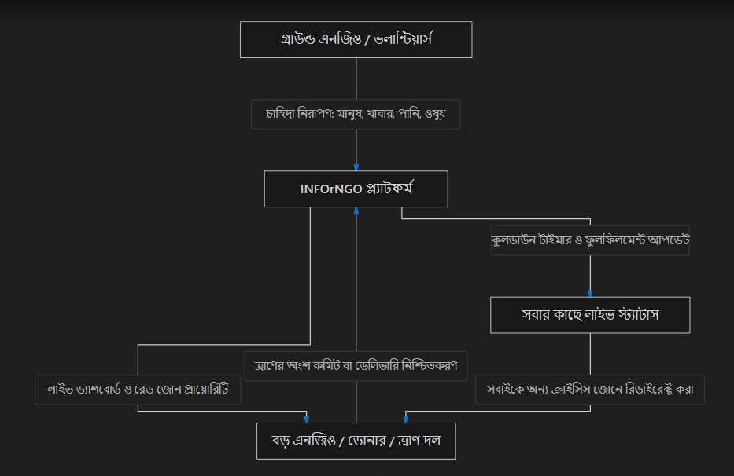

দুর্যোগকালীন ত্রাণ ব্যবস্থাপনায় অসমতা দূরীকরণ ও রিয়েল-টাইম কোঅর্ডিনেশন প্ল্যাটফর্ম
A decentralized humanitarian intelligence network connecting grassroots volunteer scouts with funded relief organizations to eliminate aid duplication, ensure 100% fair distribution, and provide dynamic crisis cool-down monitoring.
হাইওয়ে ও পরিচিত পয়েন্টগুলোতে (যেমন: চট্টগ্রাম বা খুলনার রয়্যাল মোড়) ব্র্যাক, আস-সুন্নাহ ও ৫-১০টি সংস্থা একসাথে ত্রাণ ডাম্প করে। ফলে প্রয়োজনের অতিরিক্ত ২০০০% ত্রাণ পৌঁছে নষ্ট হয়।
ভেতরের সাব-ওয়ার্ড ও চরাঞ্চলে (যেমন: ময়লাপোতা বা দুর্গম গ্রাম) কোনো টিম পৌঁছায় না। সেখানে ৩-৪ দিন শুকনো খাবার ও এক ফোঁটা খাবার পানির জন্য শিশু ও বয়োবৃদ্ধদের তীব্র সংকট চলে।
বড় এনজিওদের ফান্ড ও লজিস্টিকস থাকে কিন্তু সঠিক রিয়েল-টাইম তথ্য থাকে না। অন্যদিকে লোকাল ছোট এনজিও ও যুব ক্লাবের ফিল্ডে উপস্থিতি থাকে, কিন্তু তাদের ত্রাণ দেওয়ার মতো বড় ফান্ড থাকে না।

ফান্ডহীন ছোট এনজিও ও স্থানীয় ভলান্টিয়াররা প্রতিটি সাব-ওয়ার্ডের বাস্তব তথ্য (জনসংখ্যা, পানির স্তর, খাবার, পানি ও ওষুধের সুনির্দিষ্ট চাহিদা) প্ল্যাটফর্মে ইনপুট দেয়।
বড় এনজিওরা (ব্র্যাক, আস-সুন্নাহ ইত্যাদি) দেখে কে কত শতাংশ দিল। যেমন: ব্র্যাক দিল ৪০%, আস-সুন্নাহ দিল ৬০%—চাহিদা ১০০% পূর্ণ হলেই সিস্টেম স্বয়ংক্রিয়ভাবে স্ট্যাটাস আপডেট করে।
যেখানে ২ দিনের খাবার নিশ্চিত হয়েছে, সেই এলাকা পরবর্তী ৪৮ ঘণ্টার জন্য "লক / গ্রিন" হয়। সিস্টেম বাকি এনজিওদের তৎক্ষণাৎ পাশের ঘাটতিপ্রবণ এলাকায় রিডাইরেক্ট করে।
জিও-ট্যাগযুক্ত ভিজ্যুয়াল ম্যাপ।
🔴 Red (০-৩০% পূর্ণ): তীব্র সংকট, প্রথম প্রায়োরিটি।
🟡 Yellow (৩০-৮০% পূর্ণ): আংশিক সরবরাহ।
🟢 Green (১০০% পূর্ণ): নিরাপদ, আগামী ৪৮ ঘণ্টার ত্রাণ সুরক্ষিত।
ডিস্ট্রিবিউশন হওয়ার পর ত্রাণের পরিমাণের উপর ভিত্তি করে টাইমার চলবে (যেমন: ৪৮ ঘণ্টা বা ৭২ ঘণ্টা)। টাইমার শেষ হওয়ার আগে সেখানে কোনো ডুপ্লিকেট কনভয় বা ত্রাণের গাড়ি ঢুকতে নিরুৎসাহিত করা হবে।
শুধু চাল নয়; স্পষ্ট ক্যাটাগরি:
• পানীয় জলের গ্যালন
• শিশুখাদ্য ও দুধ
• খাবার স্যালাইন ও জরুরি ওষুধ
• স্যানিটারি কিট ও শুকনো কাপড়
কোন এনজিও কত ত্রাণ নিয়ে রওনা হয়েছে (In-Transit) তা আগেই প্ল্যাটফর্মে প্লেজ করবে। ফলে একই রোডে একসাথে একাধিক এনজিও না গিয়ে ট্রাফিক ও অপচয় এড়ানো যাবে।
দুর্যোগপূর্ণ অঞ্চলে 2G নেটওয়ার্ক বা দুর্বল সিগন্যালেও কাজ করার মতো অতি-হালকা UI। নেটওয়ার্ক না থাকলে অফলাইনে ড্রাফট রেখে সিগন্যাল পেলেই অটো-সিঙ্ক ও SMS নোটিফিকেশন।
যেসব ছোট এনজিও তথ্য সংগ্রহ করে দেবে, তাদের প্রোফাইল ও কন্ট্রিবিউশন প্ল্যাটফর্মে দৃশ্যমান থাকবে। এতে তাদের প্রাতিষ্ঠানিক বিশ্বাসযোগ্যতা ও ফিউচার ফান্ডিং পাওয়ার সুযোগ তৈরি হবে।
মোট চাহিদা: ১,০০০ পরিবার (২,০০০ খাবারের প্যাকেট + ৫০০ গ্যালন পানি)
• লোকাল এনজিও 'A' পরিস্থিতি মূল্যায়ন করে তাৎক্ষণিক পোস্ট করে।
• ব্র্যাক: সকাল ১০টায় ৮০০ প্যাকেট ডেলিভারি দিল (৪০%)
• আস-সুন্নাহ: দুপুর ১২টায় বাকি ১,২০০ প্যাকেট সরবরাহ করল (৬০%)
ফলাফল: এরিয়া লকড! পরবর্তী ২ দিনের জন্য নতুন কোনো খাবার ড্রপ বন্ধ।
মোট চাহিদা: ৮০০ পরিবার (১,৬০০ খাবারের প্যাকেট + ৪০০ গ্যালন পানি)
• ৩য় একটি এনজিও 'রেড ক্রিসেন্ট' নিরালায় যাওয়ার প্রস্তুতি নিচ্ছিল।
• প্ল্যাটফর্ম অ্যালার্ট: "নিরালা আগামী ২ দিন নিরাপদ! ময়লাপোতায় ৯০% সংকট।"
• রেড ক্রিসেন্ট তাদের ট্রাক তাৎক্ষণিক ময়লাপোতায় ঘুরিয়ে দিল।
ফলাফল: দুর্গম ৮০০ পরিবার না খেয়ে থাকার হাত থেকে রক্ষা পেল।
| মেট্রিক | বর্তমান প্রথাগত পদ্ধতি (No Coordination) | INFOrNGO প্ল্যাটফর্ম ব্যবহারের পর |
|---|---|---|
| ত্রাণের অপচয় ও স্পয়লেজ | ৪০% পর্যন্ত উদ্বৃত্ত এলাকায় নষ্ট হয় | ০% এর কাছাকাছি (শূন্য অপচয়) |
| প্রত্যন্ত অঞ্চলে কভারেজ | মাত্র ২৫ - ৩০% দুর্গম অঞ্চলে ত্রাণ পৌঁছায় | ৯৫%+ সুষম ডিস্ট্রিবিউশন নিশ্চিত |
| রেসপন্স টাইম (সিদ্ধান্ত গ্রহণ) | ৬ থেকে ১২ ঘণ্টা বিভ্রান্তি ও ফোন কলের জট | ১০ মিনিটের মধ্যে লাইভ ডেটা অনুযায়ী ডিসপ্যাচ |
দুর্যোগ ব্যবস্থাপনা ও ত্রাণ মন্ত্রণালয় (MoDMR) এবং জেলা প্রশাসনের কাছে সেন্ট্রাল রিপোর্ট স্বয়ংক্রিয়ভাবে প্রদান করা যাবে, যা সরকারের সামরিক ও বেসামরিক উদ্ধারকাজে সিদ্ধান্ত গ্রহণে সহায়তা করবে।
বিদেশি ও স্থানীয় ডোনাররা প্রতিটি টাকার সুষম ব্যবহার লাইভ ট্র্যাকিংয়ের মাধ্যমে দেখতে পারবেন। কোন এলাকায় কোন সংস্থা কতটুকু ডেলিভারি দিল তার অডিটযোগ্য ডিজিটাল রেকর্ড থাকবে।
তৃণমূল পর্যায়ের ছোট ছোট এনজিওরা কেবল ফান্ড না থাকার কারণে অবহেলিত থাকবে না। তারা এই প্ল্যাটফর্মের তথ্যদাতা 'ফার্স্ট রেসপন্ডার' হিসেবে জাতীয় সম্মান ও স্বীকৃতি পাবে।
• Next.js + Tailwind আধুনিক ইউজার ইন্টারফেস
• জিও-স্পেশাল লাইভ ক্রাইসিস ম্যাপ
• ডিমান্ড বনাম ফুলফিলমেন্ট ট্র্যাকার
• কুলডাউন টাইমার ইঞ্জিন লজিক
• ১০টি বড় এনজিও ও ৩০টি লোকাল ক্লাবের সাথে পার্টনারশিপ
• লো-ব্যান্ডউইথ অফলাইন ডেটা সিঙ্ক ও এসএমএস গেটওয়ে
• চট্টগ্রাম বা খুলনায় ফিল্ড ড্রিল ও সিমুলেশন টেস্ট
• জাতীয় দুর্যোগে পূর্ণাঙ্গ উন্মুক্ত প্ল্যাটফর্ম
• ক্লাউড হাই-অ্যাভেইলেবিলিটি ইনফ্রাস্ট্রাকচার
• মোবাইল অ্যাপ (Android/PWA) রিলিজ
• অটোমেটিক ভেরিফিকেশন ও এআই অ্যালার্ট
• সরকারি দুর্যোগ পোর্টালের সাথে API কানেক্টিভিটি
• ইউএন-ওসিএইচএ (UN-OCHA) ও ডোনার ড্যাশবোর্ড
• টেকসই মেইনটেন্যান্স ফান্ডিং
INFOrNGO কেবল একটি সফটওয়্যার নয়; এটি দুর্যোগে প্রতিটি ভুক্তভোগী মানুষের অধিকার রক্ষা এবং মানবিক সহায়তার প্রতিটি দানার অপচয় রোধের এক অনন্য ডিজিটাল বিপ্লব।